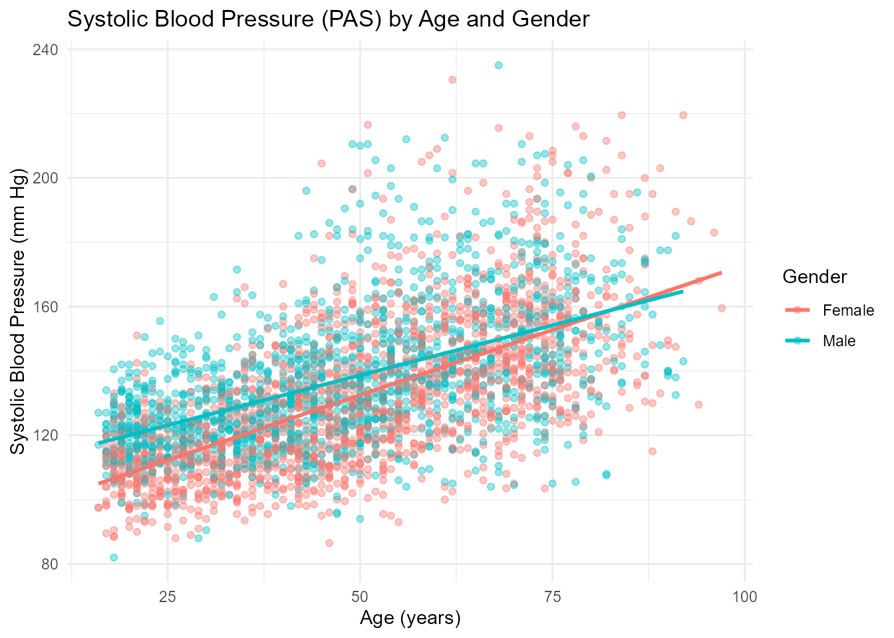

ChileDataAPI: Access Chilean Data via APIs and Curated Datasets
Source:vignettes/ChileDataAPI_vignette.Rmd
ChileDataAPI_vignette.Rmd
library(ChileDataAPI)
library(ggplot2)
library(dplyr)
#>
#> Attaching package: 'dplyr'
#> The following objects are masked from 'package:stats':
#>
#> filter, lag
#> The following objects are masked from 'package:base':
#>
#> intersect, setdiff, setequal, unionIntroduction
The ChileDataAPI package provides a unified interface to
access open data from multiple public RESTful APIs, including the
FINDIC API, the REST Countries API, the World Bank
API, and Nager.Date. With a focus on Chile, the package
enables users to retrieve real-time or historical data such as financial
indicators (UF, UTM, Dollar, Euro, Yen, Copper price per pound,
Bitcoin, IPSA index), holidays, and international demographic
and geopolitical information.
In addition to API-based data retrieval, ChileDataAPI
includes a curated collection of datasets that cover diverse aspects of
Chilean society and environment, such as human rights violations during
the Pinochet regime, electoral data, census samples, health surveys,
seismic events, territorial codes, and environmental measurements.
All API-based functions return data as tidy tibble objects, making
them ready for immediate use in data pipelines. For example, the
financial indicator functions get_chile_dollar(),
get_chile_uf(), and get_chile_bitcoin()
provide reproducible time series of daily or monthly values, where each
row corresponds to a timestamped observation.
By combining high-quality curated datasets with open APIs,
ChileDataAPI offers a comprehensive toolkit for research
and analysis related to Chile, supporting work in economics, politics,
demographics, and environmental studies.
In addition to API-access functions, the package includes a collection of curated datasets related to Chile, covering diverse topics such as:
Demographics: sample microdata from the 2017 Chilean CensusElections: data from the 2021 presidential elections and national plebiscitesPublic health: individual-level records from national health surveysHuman rights: detailed accounts of violations during the Pinochet regimeSeismology: geolocated data on earthquakes in ChileGeopolitical data: official territorial codes for communes, provinces, and regionsEnvironmental history: tree-ring based climate series from Malleco forest
ChileDataAPI is designed to support research, teaching,
and data analysis focused on Chile by integrating public
RESTful APIs with high-quality, domain-specific datasets into a single,
easy-to-use R package.
Functions for ChileDataAPI
The ChileDataAPI package provides several core functions
to access real-time and structured information about Chile from public
APIs such as FINDIC, REST Countries, the World
Bank API, and Nager.Date.
Below is a list of the main functions included in the package:
get_chile_bitcoin(): Retrieves the daily Bitcoin price in Chilean Pesos over the last month.get_chile_copper_pound(): Returns historical daily copper prices (per pound).get_chile_dollar(): Provides the exchange rate of the U.S. Dollar in CLP.get_chile_euro(): Provides the exchange rate of the Euro in CLP.get_chile_ipsa(): Retrieves daily values of the IPSA (Chile’s stock market index).get_chile_uf(): Returns daily values of the Unidad de Fomento (UF).get_chile_utm(): Returns monthly values of the Unidad Tributaria Mensual (UTM).get_chile_yen(): Provides the exchange rate of the Japanese Yen in CLP.get_country_info_cl(): Get essential information about Chile or any other country by its full nameget_chile_holidays(): Get official public holidays in chile for a given year, e.g.,get_chile_holidays(2025).get_chile_child_mortality(): Get Chile’s Under-5 Mortality Rate data from the World Bank.get_chile_cpi(): Get Chile’s Consumer Price Index (2010 = 100) data from the World Bank.get_chile_energy_use(): Get Chile’s Energy Use (kg of oil equivalent per capita) data from the World Bank.get_chile_gdp(): Get Chile’s GDP (current US$) data from the World Bank.get_chile_hospital_beds(): Get Chile’s Hospital Beds (per 1,000 people) data from the World Bank.get_chile_life_expectancy(): Get Chile’s Life Expectancy at Birth data from the World Bank.get_chile_literacy_rate(): Get Chile’s Adult Literacy Rate data from the World Bank.get_chile_population(): Get Chile’s Total Population data from the World Bank.get_chile_unemployment(): Get Chile’s Total Unemployment Rate data from the World Bank.view_datasets_ChileDataAPI(): Lists all curated datasets included in theChileDataAPIpackage
These functions return real-time data in tidy tibble
format and represent time series that are updated daily
or monthly depending on the source.
The functions powered by the FINDIC
endpoints provide economic time series such as the UF, UTM,
Dollar, Euro, Yen, Copper price per pound, Bitcoin, and the IPSA
index.
In addition, functions connected to the World Bank API supply structured information on macroeconomic indicators (GDP, CPI, unemployment, energy use, hospital beds), population trends, life expectancy, literacy rates, and other development indicators for Chile.
All outputs are delivered as tidy tibble objects, making
them ready for immediate integration into reproducible analytical
workflows.
These functions allow users to access high-quality and structured
information on Chile, which can be combined with tools like
dplyr, tidyr, and ggplot2 to
support a wide range of data analysis and visualization tasks. In the
following sections, you’ll find examples on how to work with
ChileDataAPI in practical scenarios.
Get Observed Copper Price per Pound
chile_copper_price <- head(get_chile_copper_pound(),n=10)
print(chile_copper_price)
#> # A tibble: 10 × 2
#> fecha valor
#> <chr> <dbl>
#> 1 2025-09-11 4.46
#> 2 2025-09-10 4.46
#> 3 2025-09-09 4.46
#> 4 2025-09-08 4.46
#> 5 2025-09-05 4.49
#> 6 2025-09-04 4.5
#> 7 2025-09-03 4.44
#> 8 2025-09-02 4.46
#> 9 2025-09-01 4.42
#> 10 2025-08-29 4.38Get exchange rate of the U.S. Dollar in CLP
chile_dollar_price <- head(get_chile_dollar(),n=10)
print(chile_dollar_price)
#> # A tibble: 10 × 2
#> fecha valor
#> <chr> <dbl>
#> 1 2025-09-11 963.
#> 2 2025-09-10 966.
#> 3 2025-09-09 967.
#> 4 2025-09-08 965.
#> 5 2025-09-05 971.
#> 6 2025-09-04 969.
#> 7 2025-09-03 974.
#> 8 2025-09-02 968.
#> 9 2025-09-01 965.
#> 10 2025-08-29 967.Get exchange rate of the Euro in CLP.
chile_euro_price <- head(get_chile_euro(),n=10)
print(chile_euro_price)
#> # A tibble: 10 × 2
#> fecha valor
#> <chr> <dbl>
#> 1 2025-09-11 1127.
#> 2 2025-09-10 1132.
#> 3 2025-09-09 1135.
#> 4 2025-09-08 1130.
#> 5 2025-09-05 1131.
#> 6 2025-09-04 1131.
#> 7 2025-09-03 1133.
#> 8 2025-09-02 1134.
#> 9 2025-09-01 1129.
#> 10 2025-08-29 1131.Chile’s GDP (Current US$) from World Bank 2022 - 2017
chile_gdp <- head(get_chile_gdp())
print(chile_gdp)
#> # A tibble: 6 × 5
#> indicator country year value value_label
#> <chr> <chr> <int> <dbl> <chr>
#> 1 GDP (current US$) Chile 2022 301226575540. 301,226,575,540
#> 2 GDP (current US$) Chile 2021 315325547162. 315,325,547,162
#> 3 GDP (current US$) Chile 2020 254042159309. 254,042,159,309
#> 4 GDP (current US$) Chile 2019 278285058719. 278,285,058,719
#> 5 GDP (current US$) Chile 2018 295857562992. 295,857,562,992
#> 6 GDP (current US$) Chile 2017 276154259981. 276,154,259,981Chile’s Life Expectancy at Birth from World Bank 2022 - 2017
chile_life_expectancy <- head(get_chile_life_expectancy())
print(chile_life_expectancy)
#> # A tibble: 6 × 4
#> indicator country year value
#> <chr> <chr> <int> <dbl>
#> 1 Life expectancy at birth, total (years) Chile 2022 79.2
#> 2 Life expectancy at birth, total (years) Chile 2021 78.9
#> 3 Life expectancy at birth, total (years) Chile 2020 79.3
#> 4 Life expectancy at birth, total (years) Chile 2019 80.3
#> 5 Life expectancy at birth, total (years) Chile 2018 80.6
#> 6 Life expectancy at birth, total (years) Chile 2017 80.6Systolic Blood Pressure by Age and Gender
# Clean data: remove missing values from key variables
health_clean <- chile_health_survey_df %>%
filter(!is.na(age), !is.na(pas), !is.na(male))
# Create gender variable
health_clean <- health_clean %>%
mutate(gender = ifelse(male == 1, "Male", "Female"))
# Plot: Systolic Blood Pressure vs Age by Gender
ggplot(health_clean, aes(x = age, y = pas, color = gender)) +
geom_point(alpha = 0.4) +
geom_smooth(method = "lm", se = FALSE) +
labs(
title = "Systolic Blood Pressure (PAS) by Age and Gender",
x = "Age (years)",
y = "Systolic Blood Pressure (mm Hg)",
color = "Gender"
) +
theme_minimal()
Dataset Suffixes
Each dataset in ChileDataAPI is labeled with a
suffix to indicate its structure and type:
_df: A standard data frame._ts: A time series object._tbl_df: A tibble data frame object.
Datasets Included in ChileDataAPI
In addition to API access functions, ChileDataAPI
provides several curated datasets offering valuable insights into
Chile’s recent history, population health, territorial
divisions, electoral processes, and seismic activity. Here are some
featured examples:
census_chile_2017_df: Data frame containing microdata from the 2017 Chilean census, specifically from the commune of San Pablo. The dataset includes 7,512 observations, all variable names and data values are in Spanish.chile_earthquakes_tbl_df: Tibble containing information about significant (perceptible) earthquakes that occurred in Chile from January 1st, 2012 to the present.malleco_tree_rings_ts: Time series object (ts) containing the average annual tree ring width, measured in millimeters, for Araucaria Araucana trees located in the Malleco region of Chile.
Conclusion
The ChileDataAPI package provides a robust set of tools
to access open data about Chile through RESTful APIs
and curated datasets. It includes functions to retrieve real-time
financial indicators—such as the value of the dollar, euro, yen, copper,
UF, UTM, and Bitcoin—via the FINDIC API, as well as
international country information through the REST Countries
API.
In addition, the package integrates with the World Bank API
to deliver structured macroeconomic and demographic indicators,
including GDP, CPI, unemployment, energy use, hospital beds,
population, life expectancy, and literacy rates, enabling
comprehensive socio-economic analysis.
Through the Nager.Date API, users can access official
Chilean public holidays, which facilitates temporal
alignment of datasets with policy, economic, and cultural events.
Beyond APIs, the package also offers curated datasets covering Chile’s recent history and socio-political context, including the 2017 census sample, the 2021 presidential election, public health survey data, territorial codes, seismic events, and records of human rights violations during the Pinochet regime.
By combining real-time API calls with high-quality curated datasets,
ChileDataAPI enables reproducible research and in-depth
analysis of Chile’s economic, demographic, environmental, and political
landscape.